Starta från valfri plats
Adress, servicepunkt eller vald plats i kartan.
Se exakt vilka invånare, skolor och vårdpunkter som nås inom verkliga restider. Få ett tydligt beslutsunderlag direkt i kartan.
Restidsanalys samlar tillgänglighet, service, störning och scenariojämförelser i en arbetsyta för kommuner, regioner, konsulter och samhällsplanering.
Se restidszoner, befolkningsunderlag och serviceåtkomst. Inte bara avstånd, utan verklig tillgänglighet.
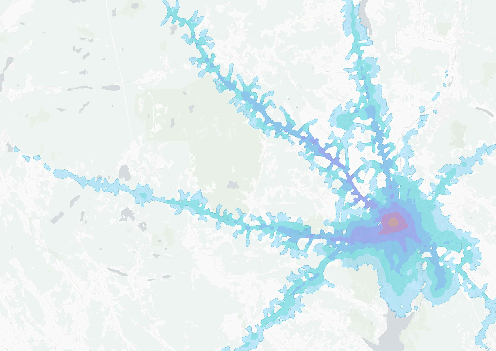
Adress, servicepunkt eller vald plats i kartan.
Gång, cykel, bil och kollektivtrafik i samma beslutsflöde.
Befolkning, skolor och vårdpunkter summeras per tidszon.
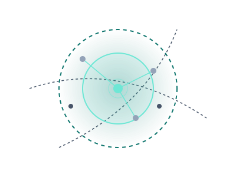
Rita en störningskorridor och se direkt vilken befolkning, service och tillgänglighet som påverkas.
Rita vägsträckan eller korridoren som berörs.
Se tappad räckvidd och omledning med tydliga konsekvenser.
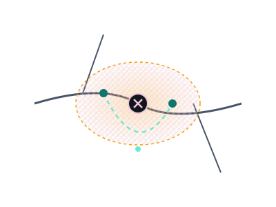
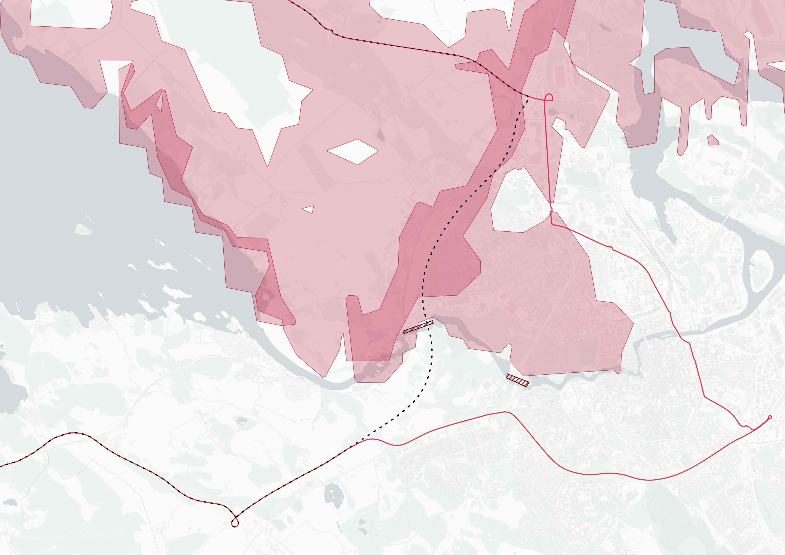
Testa nya länkar och jämför hur reach, serviceåtkomst och befolkningsunderlag förändras.
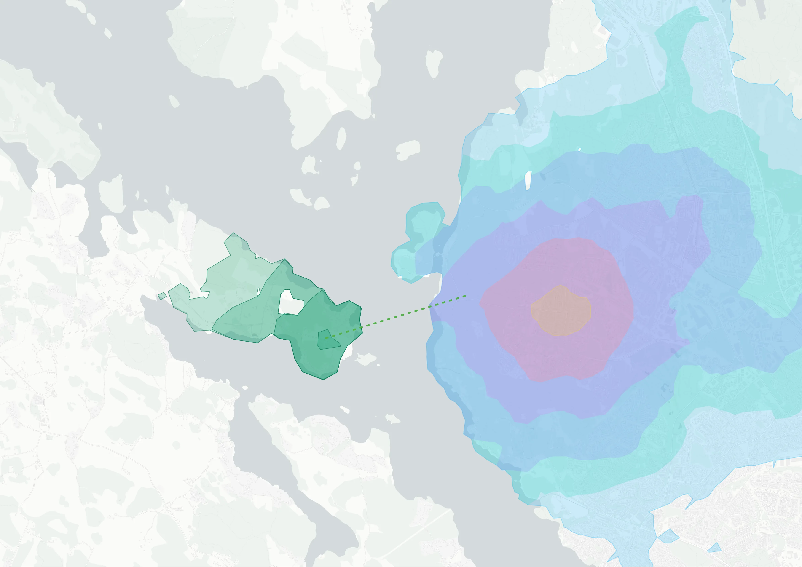
Placera en ny koppling mellan två punkter.
Se hur tillgängligheten förändras i människor och service.
Exportera och använd i dialog, GIS och rapporter.
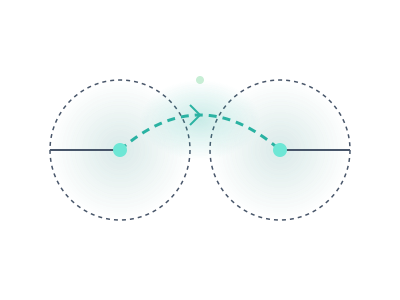
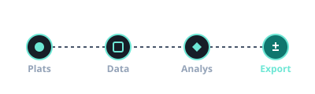
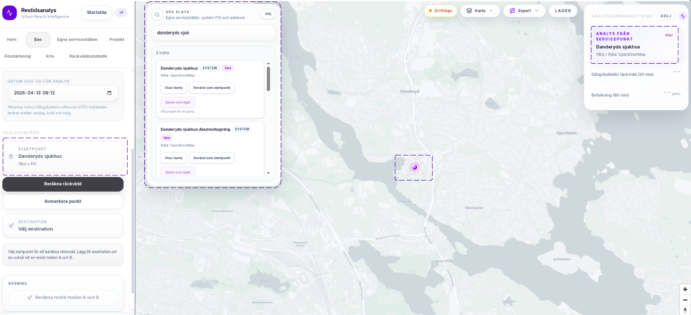
Starta från karta, adress eller servicepunkt.
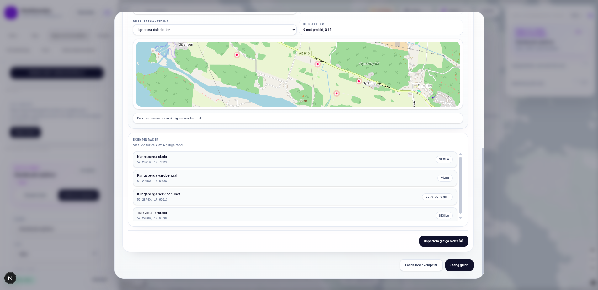
Använd systemdata eller importera egna serviceställen.
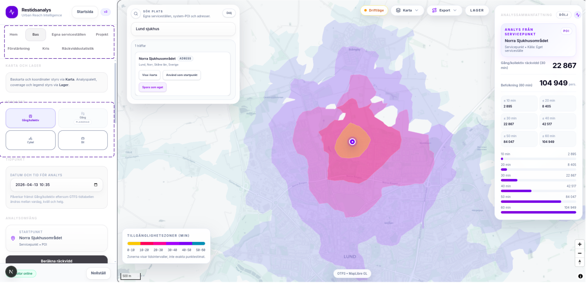
Beräkna reach, kris eller förstärkning.
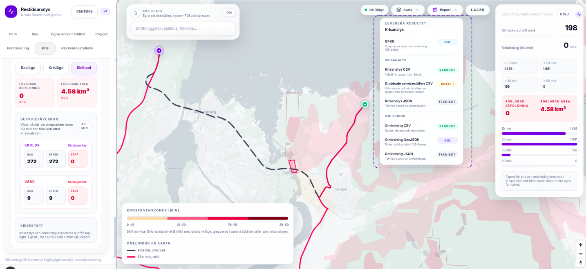
Ta vidare till GIS, rapport och beslutsmöte.
Restidsanalys finns i utvalda regioner och kan demonstreras utifrån befintlig täckning, pilotområde eller kommande behov.
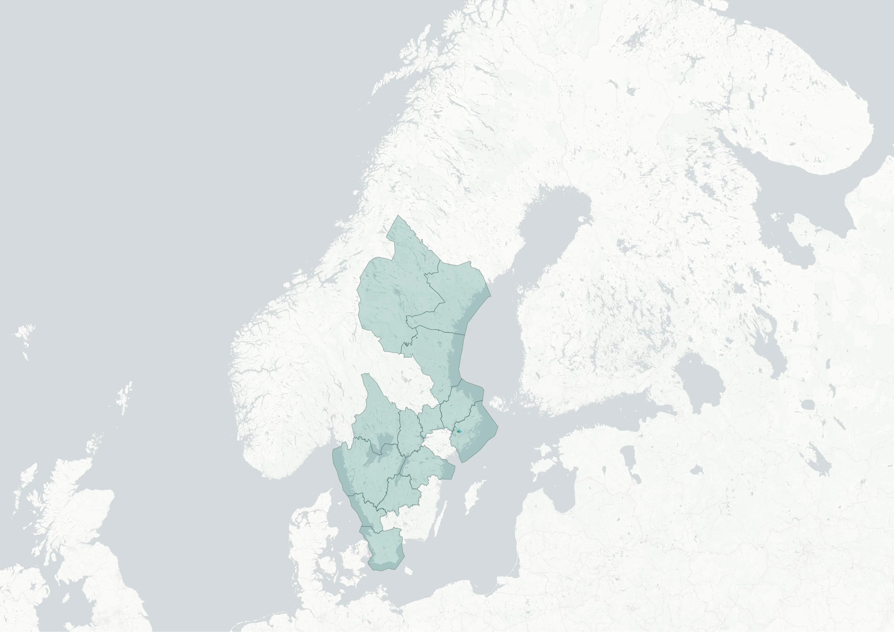
Vi visar hur räckvidd, kris och förstärkning fungerar i praktiken och hur analysen kan tas vidare till rapport, dialog och GIS-arbete.